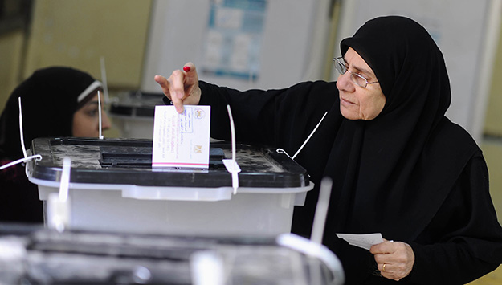
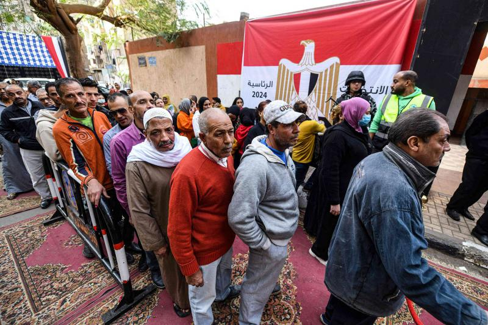

The Lead-Up to Egypt’s 2023 Presidential Election

On October 2, Sisi declared his candidacy for the presidential election, completing what he said was his
“dream of a new mandate.”
Barring unforeseen circumstances, he should win the elections
comfortably—he won the 2014 and 2018 elections with 97 percent of the votes, and this time should not be
any different.
Amidst a quiet election cycle, Egyptians in the diaspora cast their vote for the
first phase of the elections on December 1-3 and turnout appears to have been low. Citizens in Egypt
will follow suit this weekend, with votes taking place on December 10-12. Even though the election
results will be of no surprise, they are taking place in a uniquely tense climate: the country is in the
midst of a severe economic crisis and the war on Gaza has further added tension, reducing the relative
political
significance of the elections in the grand scheme of Middle Eastern affairs.
The aim of this explainer is to share the important dates and elements of these elections, offer
insights into president Sisi’s third candidacy, and provide an understanding of electoral procedures and
voting timelines. What comes next will determine how the next six
years of Egyptian domestic and regional affairs may look like, and these elections are just the first
step.
How is the electoral system structured?

The electoral system in Egypt is a majoritarian two-round system for presidential elections, where the
president is elected through direct universal suffrage for a six-year term, normally renewable only
once. Although a president cannot serve more than two consecutive terms under Article 140 of the
constitution, Sisi is eligible for re-election after the term of office was extended from four to six
years by a 2019 constitutional amendment, allowing him to run for a third term. A candidate must secure
an absolute majority in the first round; otherwise, a second round is held between the top two
candidates.
Eligible candidates must be Egyptian citizens born to Egyptian parents, with neither themselves, their
parents, nor their spouses holding other citizenships; they must have completed military service or have
received an exemption, and be at least 40 years of age. In order to run for elections, the prospective
candidates must receive endorsements from at least 20 members of parliament, or at least 25,000 eligible
voters across 15 governorates or more, as outlined in Article 142 of the 2014 Constitution.
The National Election Authority (NEA) is responsible for administering all electoral events in Egypt,
including presidential elections. It is made up of 10 members of the judiciary, appointed by the
president; it is currently headed by Judge Hazem Badawy, who also serves as the deputy head of the Court
of Cassation. The NEA is responsible for ensuring the integrity of the electoral process in Egypt, with
its remit including the oversight of voter identification, ballot issuance, and result tabulation. There
are 10,085 polling stations across the country and 138 stations in Egyptian consulates and embassies for
expatriates. There are 67 million Egyptians who are eligible to vote.
What is the larger context in which these elections are taking place?
 The political landscape in Egypt is dominated by President Sisi’s regime, widely considered
authoritarian. Sisi has consolidated power through a brutal campaign of repression against dissent,
eliciting criticism from western governments and rights groups.
Economically, Egypt is in the midst of a severe crisis, marked by record-high inflation driven by a
sharp decline in the value of the Egyptian pound and a foreign currency crunch. Households have been
suffering from frequent shortages of basic goods, such as sugar and rice, and the government has
scheduled regular electricity cuts since the summer to reduce costs.
Egypt’s oil-rich benefactors in the Gulf, who have poured billions of dollars in economic assistance
over the past decade, have signaled their reluctance to continue bailing out the nation. Additionally,
the International Monetary Fund has halted a $3 billion loan deal it signed with Egypt last year due to
the authorities reluctance to enact painful reforms, notably the adoption of an official flexible
exchange rate.
External debt has also ballooned to nearly $165 billion by the end of June 2023, up from about $46
billion when Sisi officially assumed power in 2014. One immediate challenge the government will face is
financing the $42 billion in debt repayments due in 2024. Sisi’s critics say he squandered billions of
dollars pursuing megaprojects of little economic value, such as building a $59 billion new capital city
east of Cairo and widening the Suez Canal, all the while increasing the army and state’s economic
footprint.
External factors, including the Russian invasion of Ukraine, and the Israeli war on neighboring Gaza
have further strained the economy. Rising interest rates in the United States also magnified Egypt’s
economic woes, with portfolio investors steering away from risky emerging markets.
The economic crisis has translated into tangible social impacts, with a substantial portion of the
population experiencing financial hardship, thus flaring social tensions. Indeed, a growing anger has
arisen over the rising costs of basic necessities; staples such as bread, one of the slogans of the 2011
uprising (“bread, freedom, dignity”) have seen their price triple, and the price of key food imports
like cooking oil and vegetables have also shot up, putting the squeeze of many Egyptian’s
wallets.
What are the procedures on vote counting, processing, and dispute resolution?
Votes are counted first at polling stations, followed by tabulation at general committees, which then
report to governorate committees, and then are finally sent to the NEA for consolidation, after which an
official announcement is made. Electoral disputes can be appealed to the Supreme Administrative Court
within 48 hours of the NEA’s decisions, including appeals to the final result. The NEA handles electoral
disputes during elections, addressing complaints related to voter lists, candidate removals, and more;
but, their ability to effectively resolve conflicts has been brought into question.
In 2018, potential presidential candidates Mohamed Anwar El-Sadat and Khaled Ali, raised complaints
about rights violations and hindrances during the electoral process. The NEA responded by extending
office hours, but dismissed claims that there were any violations or favoritism toward any candidate.
Ongoing queries revolve around the NEA’s approach to complaints, and the implications of its issuance of
blanket rejections.
Further, instances of vote-buying were reported during Egypt’s constitutional referendum in 2019. Voters
from working-class neighborhoods were allegedly bussed into polling stations, and offered food packages
to influence their vote in favor of the changes. Vote-buying is explicitly prohibited by Decree-Law No.
45 of 2014, with punishments of a minimum incarceration of one year and fines from 1,000 to 5,000
Egyptian pounds (approximately $20 to $100) for activities that range from threatening voters,
financially compensating them for their vote, and circulating ballots used in electoral processes
without proper authorization. Similar reports also surfaced during the 2020 senate elections, with
Sisi’s allies lacking any sort of substantial political opposition in their ascension to power.